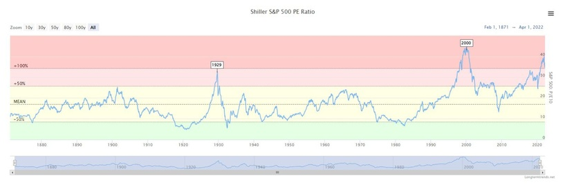
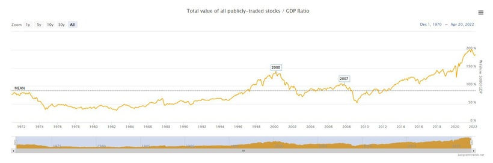
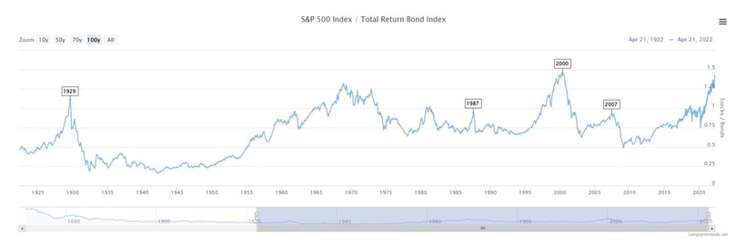
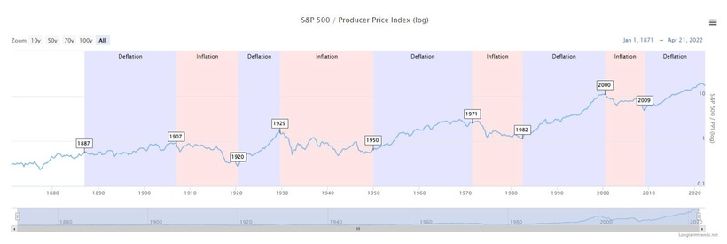
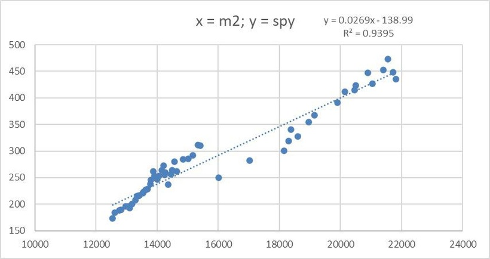

昨晚，SPY跌了3.7%，QQQ跌了4.5%。其實我看淡美股絕不是近兩個月的事，早在2021年第二、三季已經認為美股估值昂貴，甚至被人恥笑我過早看淡美股。不過，現在他們不能恥笑我了。SPY近一年回報為-1.3%，QQQ近一年回報則是-7.3%。如果看高位回撤，SPY是14%，而QQQ則是22%。
近半年，無論是網台、媒體，抑或專欄，我都指我看淡美股。原因呢？首先，估值昂貴，用各種指標看都是貴；另外，聯儲局收水，必對股票有不利影響；再者，身邊很多散戶都認為持有QQQ就能發達，證明美股韭菜較多。
大約半年前的真人真事對話：
我「呢排揸緊咩？」
友人「TQQQ」
我「有損耗架喎」
友人「哦。」「個個都話揸TQQQ好架喎」
小弟已盡全力做好投資者教育，救不到也沒辦法。
在此，打算分享幾個證明美股估值昂貴的指標。
首先，是圖一。圖一顯示了Shiller SP500的PE，即經過通漲調整的市盈率，亦稱CAPE ratio。現值為30以上，比2007年的美股PE還要高，與2000年的科網泡沫PE差不多。現值PE比長期均值高100%。

第二個，請看圖二，為幾千隻美國上市的股票的大型市場指數，再除以GDP。這個指標與巴菲特愛看的Market cap / GDP類近。目的在於觀察經濟是否支持股市市值。現值比2000年及2007年水平更高，基本上是all time high。現值比長期均值高接近200%。

第三個，請看圖三，為SP500除以債券指數。目的在於觀察股票會否比起債券超買。現值比2007年高，與2000年比則相約。即使假設比率均值為1，以現水平計，若要回均值，要不股市跌20%，就要債券升20%。換句話說，即現時債券息率不支持現時的美股估值，除非不再加息，否則就要股市下跌。

第四個，請看圖四，為SP500除PPI。目的在於觀察股市與商品市場的相對價值及週期。這張圖很易犯下confirmation bias。很多人會說，這張圖證明股市估值貴，因為比率新高。這是不對的。

因為整條線一直在上升，根本不像前3張圖有長期均值的概念。相反，這張圖是用來觀察週期的。平均每10年就會由通縮變通漲，10年後又會由通漲變通縮。圖中近10年就是”deflation”，剛好近來開始加息，商品價格爆升，絕對有機會開啟「商品超級週期」。若真如此，股市會跑輸商品。
這4張圖的因子是精心挑選的：
1. 股票指數中的企業的估值能否支撐股市
2. 經濟環境能否支撐股市
3. 債券市場及息率與股市相對關係
4. 商品市場及週期與股市相對關係
最後，送大家一張圖。關於收水的，請看圖五，為美股及M2的關係。X axis是美國M2，Y axis是SPY的價格。你會發現兩者相關性極高，為97%。非常合理，美股升是因為放水；因此，收水，自然要下跌。跌多少呢？每月減少balance sheet 95B usd，即x如果-95，y就會是-2.4，以$400來算，每月SPY跌近1%是合理的。所以，如果美股泡沫不爆破的話，投資SPY的expected value將會是負數。即使本身SPY annual growth 6-8%，企業增長也會被收水因素抵消，變成早幾篇Patreon提到的「雞肋」。（想不到我Patreon的其中兩個字竟然是由這一大堆分析組成吧）

之所以常說「千萬不要因為你在2020及2021年在美股賺錢，就以為賺錢很容易，這會犯上心理學中，路徑依賴的問題」，就是這個原因。不要少看收水影響。
補充一點，上述分析都是適用於長線投資角度的。估值昂貴不代表明天/下星期/下個月會大跌，亦不代表你要賣掉所有持倉，亦不代表你要沽空美股。短線有短線的因子、指標、策略。
但請你別再告訴我說，你買美股，是在做價值投資、長線投資。